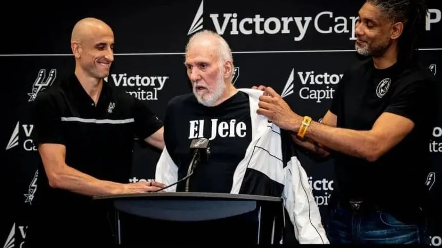

La divertida reaparicion de Gregg Popovich, junto a Manu Ginobili: "Ahora soy El Jefe".
El entrenador de San Antonio se reencontro con el bahiense en el AT&T Center y protagonizaron un divertido momento que se volvio viral en las redes sociales.
05/05/2025 18:24
Manu Ginóbili, junto a Tim Duncan acompañando al legendario Gregg Popovich (Prensa Spurs).
Dentro de la triste noticia de que Gregg Popovich no volverá a dirigir a San Antonio Spurs por sus problemas de salud, la franquicia texana encontró la forma de no perder el sentido del humor a la hora de los anuncios y de darle al legendario entrenador que lo condujo por 29 años un espacio de honor en la toma de decisiones: ostentará el cargo que llama simpáticamente "El Jefe".
Pop apareció para la conferencia de prensa en la que fue confirmado en el banco Mitch Johnson, acompañado y asistido por leyendas como Manu Ginóbili y Tim Duncan. Con un andar pausado a causa de sus inconvenientes de salud, el coach subió al estrado con una campera y afirmó: "Ya no soy entrenador, ahora llámenme El Jefe", mientras se quitaba el abrigo para dejar ver la inscripción alusiva en su remera, ganándose un caluroso aplauso. También, elogió al nuevo DT.
De este simpático modo, San Antonio oficializó el nuevo rol de a estrella de 76 años, quien el último noviembre sufrió un ACV del que aún se recupera. Su flamante función, una suerte de director deportivo, ya lo había tenido en 1994, dos años antes de tomar las riendas del equipo.De este simpático modo, San Antonio oficializó el nuevo rol de a estrella de 76 años, quien el último noviembre sufrió un ACV del que aún se recupera. Su flamante función, una suerte de director deportivo, ya lo había tenido en 1994, dos años antes de tomar las riendas del equipo.
Gregg Popovich, una leyenda viva que no se aleja de los Spurs
Pop deja atrás así una etapa dorada de su trayectoria en la que se convirtió en el entrenador con más victorias en la historia de la NBA (1422), cinco veces campeón, elegido el mejor conductor del año en tres oportunidades, integrante del Salón de la Fama desde 2023 y coach de la selección de Estados Unidos en los Juegos Olímpicos Tokio 2020, donde obtuvo la medalla dorada.